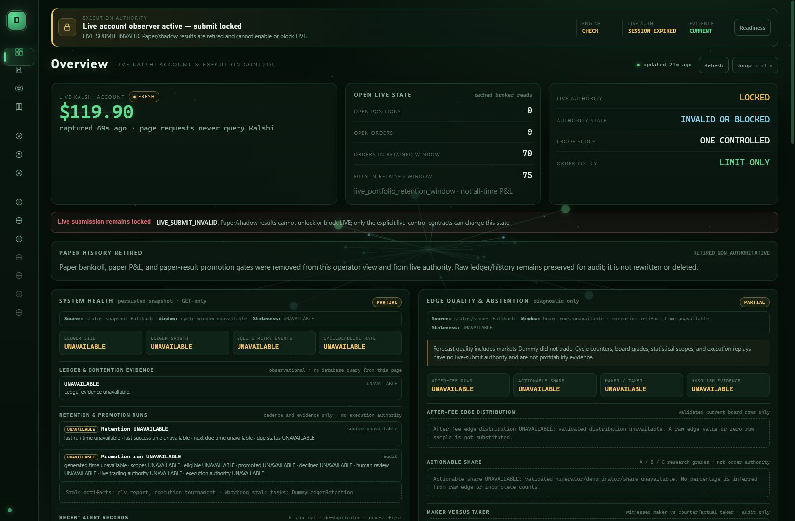
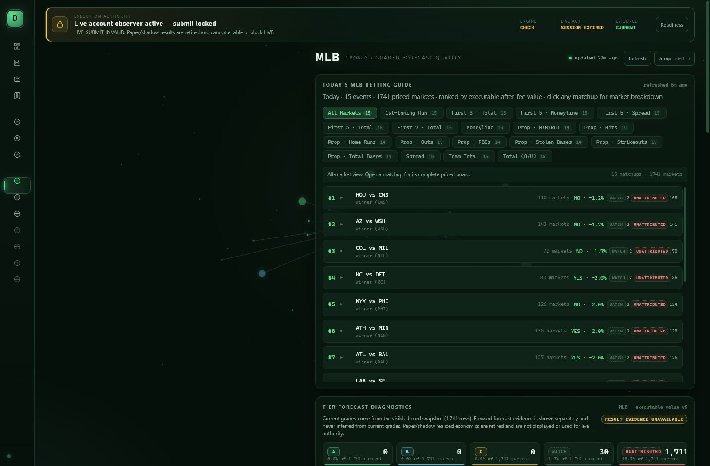
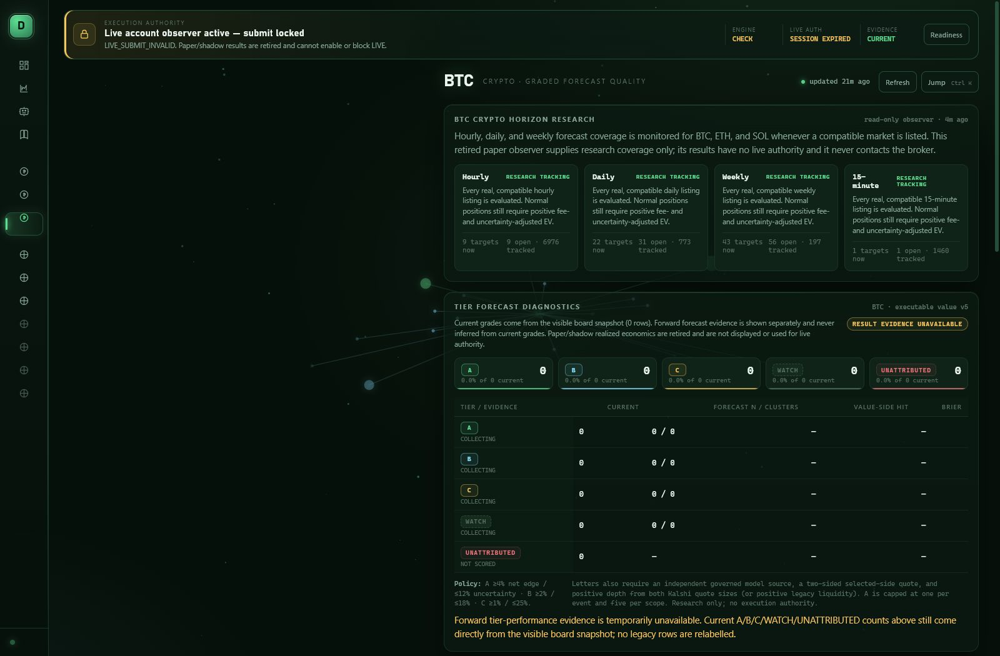

3,663
markets priced
An evidence-gated organism for crypto & sports prediction markets. It gathers point-in-time public evidence, calibrates competing forecasts, earns every source its trust from settled outcomes, and explains and records each paper decision in an auditable ledger.

Every market is priced by a purpose-built model, cross-checked by challengers, and gated on settled evidence before it can earn trust.
Public evidence flows one direction. Competing forecasts are fused by earned trust, sized by risk gates, and only a hardened firewall reaches the market. Reconciled outcomes feed the calibration that closes the loop.
The Dummy Totalizator is a read-only web board at 127.0.0.1:8787 that reads only the runtime artifacts the scheduled loops already write — it never touches the trading path. Pitch-green phosphor, split-flap lamps that flip on every re-price, a live ticker tape, and a ⌘K palette to any coin or league.

